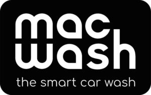

Trade Mark Journal No.2025/046 14 November 2025
WO0000001874678 (35,36,37)
Office of origin: European Union Intellectual Property Office (EUIPO)
Date of International Registration:7 August 2025
Date of designation in the UK:
7 August 2025

International priority date claimed: 20 March 2025
(European Union Intellectual Property Office (EUIPO))
(019159870)
- Class 35
- Loyalty, incentive and bonus program services; administration of loyalty and incentive schemes; organisation, operation and supervision of loyalty schemes and incentive schemes; organisation, operation and supervision of an incentive scheme; administration of loyalty programs involving discounts or incentives; promoting the goods and services of others by arranging for sponsors to affiliate their goods and services with awards programs; promoting the goods and services of others through the distribution of discount cards; billing; book-keeping; preparation of invoices; the aforesaid services included in this class, solely in connection with the operation of a car washing installation for exterior and/or interior cleaning and/or a service station and relating to the conducting of inspections, maintenance, polishing, oil changing, cleaning and repair of motor vehicles, caravans, trailers, machines and engines.
- Class 36
- Electronic funds transfer; issuing of tokens of value in relation to incentive schemes; issuing electronic payment cards, in particular in connection with bonus and reward schemes; information services relating to the automated payment of accounts; e-wallet payment services; the aforesaid services included in this class, solely in connection with the operation of a car washing installation for exterior and/or interior cleaning and/or a service station and relating to the conducting of inspections, maintenance, polishing, oil changing, cleaning and repair of motor vehicles, caravans, trailers, machines and engines.
- Class 37
- Garage services, namely conducting of inspections and maintenance and repair work on motor vehicles, caravans, trailers, machines, motors and engines; conducting of oil changes, engine repair, vehicle inspections with regard to tyre pressure and level of engine oil, gearbox oil, brake fluid and water in windscreen washer installations and batteries, cooling water, antifreeze; fitting and repair of tyres, vulcanisation, in particular of tyres; vehicle lubrication and greasing of all kinds; motor vehicle engine regulation and conducting of adjustments of all kinds to motor vehicles in the context of maintenance, servicing and repair of motor vehicles; post-accident repair, varnishing; battery maintenance and charging; maintenance and repair of lamps and burners; upholstering, included in this class; upholstering and repair of upholstery; pump repair and maintenance; maintenance and repair of motor vehicles at sporting events; treatments for protecting vehicles from rust and corrosion; rust inspection in connection with rust protection measures; assembly and installation, and conducting of modifications to increase performance (tuning) of motor vehicles; washing, cleaning, polishing and maintenance of motor vehicles, engines, caravans and trailers, in particular exterior washing and interior cleaning, maintenance of equipment parts, including fittings, seat covers, car carpets, door and roof linings; paintwork maintenance; rim cleaning; windscreen cleaning; disinfection and extermination of vermin, other than for agricultural purposes; leather care, cleaning and repair services; cleaning of textiles and upholstery; service stations, namely refuelling, charging, maintenance, servicing, repair and cleaning of vehicles and machines of all kinds; operation, providing, rental and leasing, including by means of franchising, of service stations for repairing, maintaining, servicing and cleaning motor vehicles and engines, caravans and trailers and for providing service station services; maintenance of service stations and cleaning installations; vehicle service stations for repairing, cleaning and maintaining vehicles; rental of cleaning machines; consultancy in relation to the repair and maintenance of vehicles; consultancy in relation to the lubrication and maintenance of engines and machines.
Mr. Wash Autoservice AG
Representative: VON ROHR PATENTANWÄLTE PARTNERSCHAFT MBB, Rüttenscheider Str. 62, 45130 Essen, GERMANY